2026 年 11 月 · thatgamejam #02
双角色能力、配合机制与关卡设计
一颗玻璃珠，一张折纸。改变身旁的玩具，把它的属性传给远处的物件，再为同伴创造下一步。
这是一个单人切换双角色的解谜游戏。我围绕“尺度变化”与“属性同步”，设计了八个关卡，并在 AI 辅助下完成相应的开发、整合与调试。
我的工作
- 在队友最初的 Demo 上重新设计角色能力与互动方式。
- 独立设计八个关卡，推进空间结构、机关规则、解法与教学。
- 进行 Godot 开发与整合，处理操作一致性、可读性和提示。
THISHI × doublesurplus · 本文以 itch.io 发布版及 11 月 7 日玩家版为基准。
能力起点：让两个角色都能独立行动
《玩具岛》由一个玩家交替操控玻璃珠与折纸。玻璃珠连接两个物体，把一方的属性传给另一方；折纸站到物件旁边，改变它的尺度。两种能力共同作用在旧玩具上，使原本互不相关的物件产生联系。
最初的 Demo 来自队友。我在这个基础上重新讨论角色能力和互动方式，也经历过风琴书桌、连接实验和其他玩法方向的尝试。最初让我在意的是两名角色的不对等：折纸独自行动已经能做很多事，小球却更像配合它的附属。
我很喜欢“连接”的感觉，因此希望小球也有能够独立成立的能力。连接不只是拉住同伴，还可以在两个物体之间传递属性。与此同时，折纸可以改变这些属性的尺度。两名角色既能独立影响环境，也能通过对方把能力带到原本触及不到的地方。


我的设计范围
| 发布关卡 | 名称 | 本文讨论的问题 |
|---|---|---|
| 01 / 02 | 第一道折痕／初次同行 | 能力教学；从被帮助到互相帮助。 |
| 05 | 磁力玩具台 | 通过遮挡、近身与朝向改变通行条件。 |
| 06 | 多米诺接力 | 远近传递与可见的物理连锁。 |
| 08 | 同拍·乐器仓库 | 尺度从几何扩展到节奏。 |
| 11 | 双箱船闸 | 角色位置、回位与状态存储。 |
| 13 | 镜宫·纸艺三段 | 把镜中形态作为参照。 |
| 14 | 独白 | 用熟悉的操作回应开场。 |
这八关由我独立完成关卡设计；其余六关由队友设计，本文不将它们计入我的关卡成果。除关卡和机制外，我也在 AI 辅助下进行 Godot 开发、整合与调试。下面按照设计问题展开，次序与开发顺序、游戏中的排列并不完全相同。
共同规则：改变、传递与保留
关卡会换成不同的玩具，但能力的基本关系需要稳定。玩家先认出一种可改变的属性，再判断它能否通过连接影响另一个物体。难度可以来自空间、距离、操作顺序和物件自身的行为，而不必每一关都增加一套新按键。
| 规则 | 玩家可以怎样使用它 |
|---|---|
| 先选参照，再选接收物 | 连接有方向。谁把属性借给谁，会改变结果。 |
| 一次维持一条连接 | 不能同时远程控制所有对象，需要安排传递顺序。 |
| 范围限制持续同步 | 角色站在哪里，会改变可以连接哪些物件。 |
| 断开保留已复制的结果 | 可以先改变一件物体，再去处理另一件。物体自身的运动或回位机制仍然有效。 |
| 接收物也能成为新参照 | 一次得到的结果可以继续传递，形成多步解法。 |
| 折纸需要近身调整 | 能看见目标不等于能够直接改变它；小球负责把近处变化带到远处。 |
试一试：保留下来的结果可以成为新参照
为作品说明制作的规则示意，仅演示有方向的同步与断开保留；不代表完整游戏场景。
同一套能力，在不同关卡里承担什么作用
| 关卡 | 折纸改变什么 | 小球传递什么 | 主要限制 |
|---|---|---|---|
| 初次同行 | 门闩尺度、可见范围等 | 尺度、数量、展开状态 | 两条道路相互锁住。 |
| 乐器仓库 | 节拍器的节奏尺度 | 摆动节拍与相对时机 | 变慢之后仍需找到通行窗口。 |
| 磁力玩具台 | 磁场范围、机器人视野 | 磁极或朝向等属性 | 必须先创造近身操作条件。 |
| 双箱船闸 | 身旁水箱的水位 | 水位及保留下来的高位 | 不同岸台的连接范围不同。 |
| 多米诺接力 | 骨牌高度、陀螺尺度 | 高度与转动 | 远处目标不能直接调整。 |
| 镜宫 | 真实纸构件的形态 | 真实或镜中的状态 | 倒影改变了可用参照。 |
我关注的是同一能力可以作用到哪些对象上，以及合作时怎样互相辅助、互相牵制。几何尺寸只是起点；磁场、视野、频率和展开状态，让“尺度”和“传递”拥有了不同的具体表现。每一次扩展仍需要一个可看见、可验证的结果。
初次同行：轮流为对方创造条件
初次同行把两名角色放在相互依赖的道路上。某一侧看见的机关，常常需要另一侧的角色先改变条件；刚刚被帮助的角色，随后又成为能够帮助对方的人。
我希望这关建立的是后续配合的基本语法。玩家需要同时理解自己的目标和同伴的处境：现在谁能接近物件，谁能把变化传出去，哪一扇门打开后又会出现新的参照。
三种属性，逐步扩大同一规则的含义

门闩的变化直接影响道路是否打开。角色先在自己能够接近的位置调整，再通过传递影响另一侧。玩家可以立即把操作与通路变化对应起来。

这一段让玩家关注结果中的数量，而不只是物体变长或变短。同一套连接方式可以传递另一种属性，玩家需要重新辨认什么才是机关关心的量。

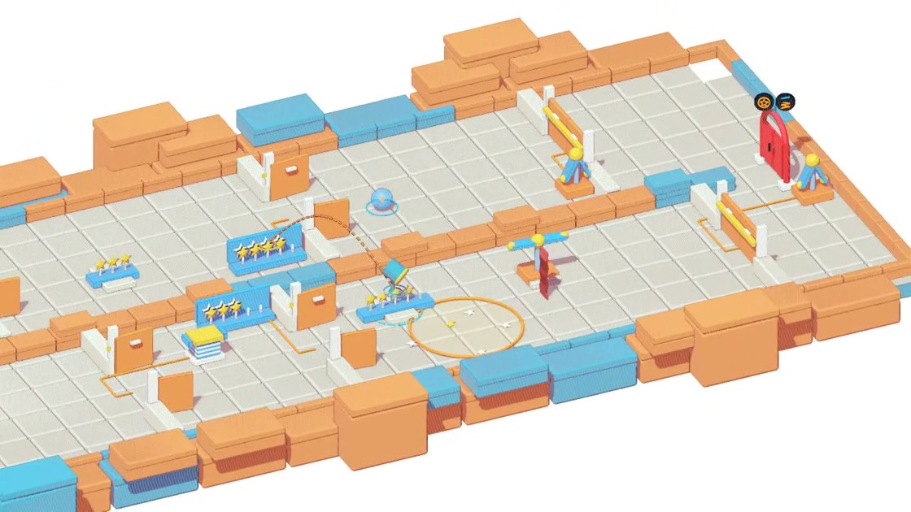
获得的结果不只是一次性的钥匙。一个物件在改变之后，可以继续把状态传给下一个对象；角色也因此轮流取得推进条件。
对我来说，教学不应只在屏幕上告诉玩家“现在按哪个键”。门闩的位置、星架的方向和翼锁的变化，都需要把操作对象与当前目标联系起来。物件用途读不出来时，先改物件的形态和反馈，比继续堆叠提示更直接。
关卡最后需要两名角色都抵达出口。小球已经走通自己的路，并不意味着配合已经结束；还要利用新的位置和参照把同伴接过来。这个完成条件会在后面的船闸和镜宫里变得更重要。
乐器仓库：从尺寸走向节奏
乐器仓库是我最早完成的正式关卡。此前的测试主要改变书的厚度、宽度这些显而易见的尺度；从这一关开始，折纸可以改变更多虚拟和不可见的尺度。这个方向延伸到了后续的关卡里。
节拍器是合适的中间物件：它的机械形态与摆动节奏有关，玩家能看见调整造成的变化。再通过小球把节拍传给摆槌，原本独立的玩具就共享了同一个运动规律。

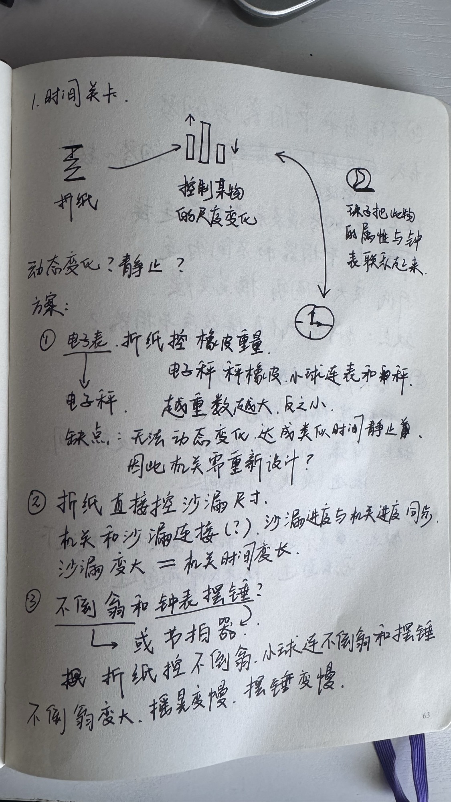

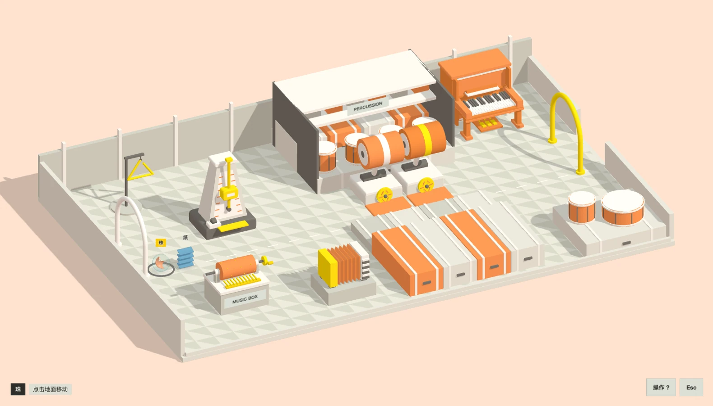
第一层：让危险的运动慢下来
玩家先改变节拍器，把较慢的节拍分别传给两只摆槌。一次只能维持一条连接，因此需要使用断开后保留状态的规则，先处理一个，再处理另一个。
这一步给出直观反馈：摆槌的节奏确实改变了。但我希望玩家继续观察通道本身。两只摆槌都变慢，不代表它们已经形成足够的穿行机会。
第二层：相同的慢节拍，仍然不够

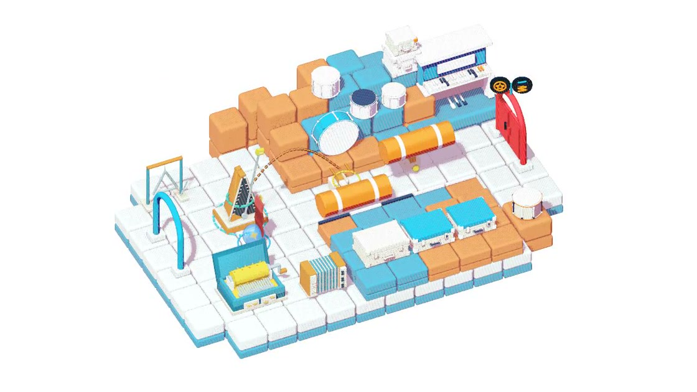

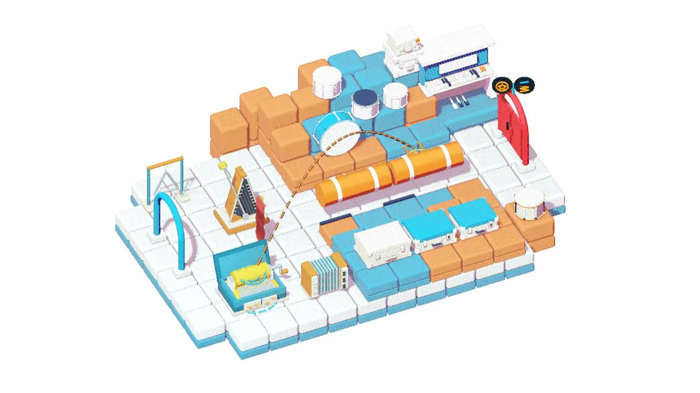
当两只摆槌仍然同拍运动时，玩家面对的是另一个问题：需要改变它们彼此之间的时机。八音盒提供了错开节奏的参照，让相同速度的两件物体以不同的时间关系运动。
这样，关卡包含两个相邻但不同的发现：“让它慢下来”和“让它们错开”。玩家仍要看清通过的时机，但主要困难落在理解节奏关系上，而不是用更快的反应弥补错误方案。
早期版本只围绕档位与同步展开，后续才加入第二层节奏关系。配重和折纸控制方式也经历过修改。这里展示玩家版的操作，保留早期原型作为尺度扩展的过程证据。
磁力玩具台：先改变接近机关的条件
我希望磁力玩具台把几种方法结合起来：小球改变或传递属性，折纸调整磁场与观察范围，两名角色通过走位取得新的操作条件。单独减小视野，或者单独用磁铁吸引屏风，都还不够构成这一关的完整问题。
这里有一个循环：折纸需要靠近机器人才能缩短它的视野，但靠近之前又需要避开它的观察。屏风、磁极与磁场范围因此共同承担了“怎样接近”的问题。

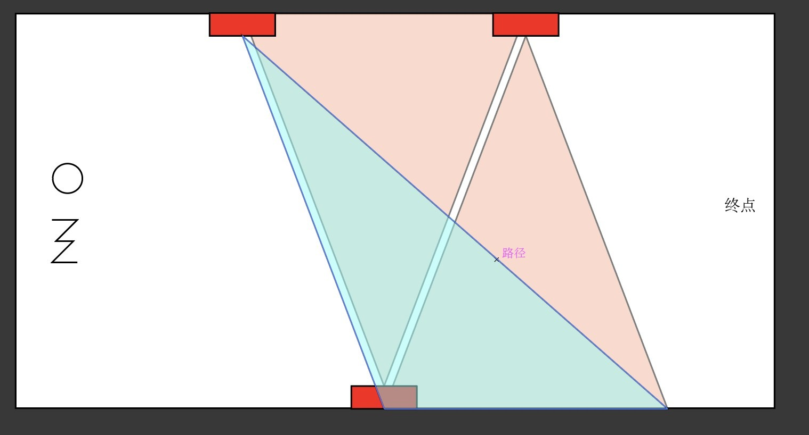

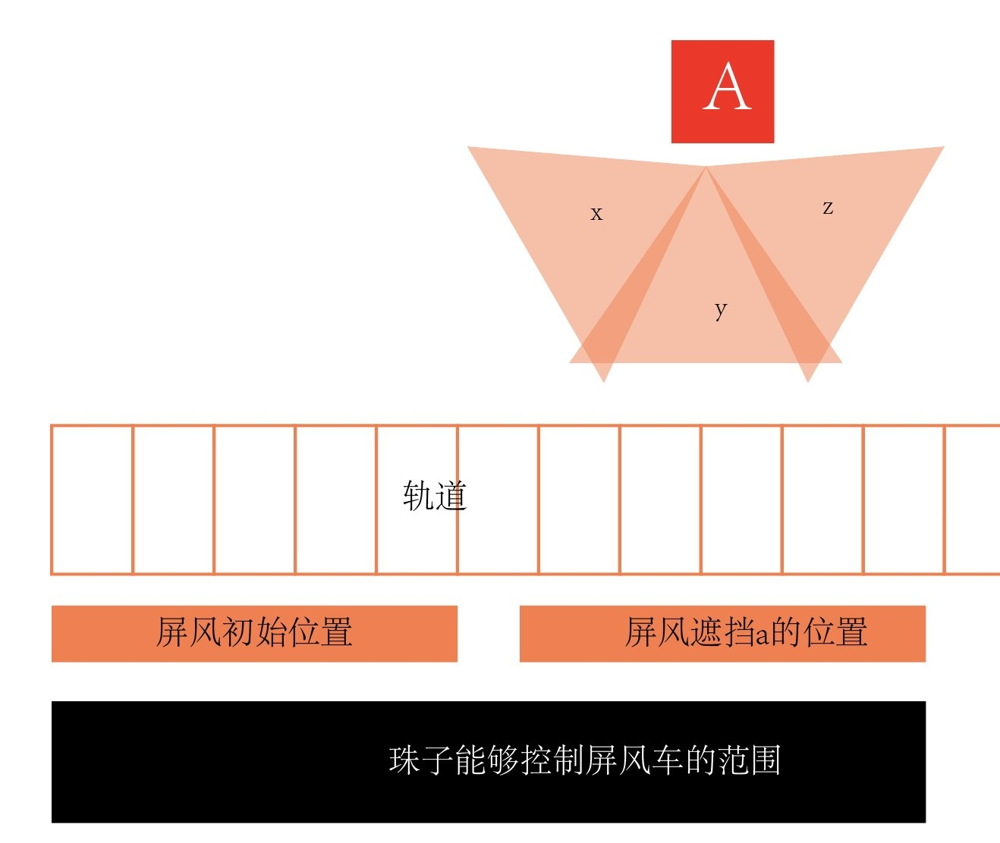

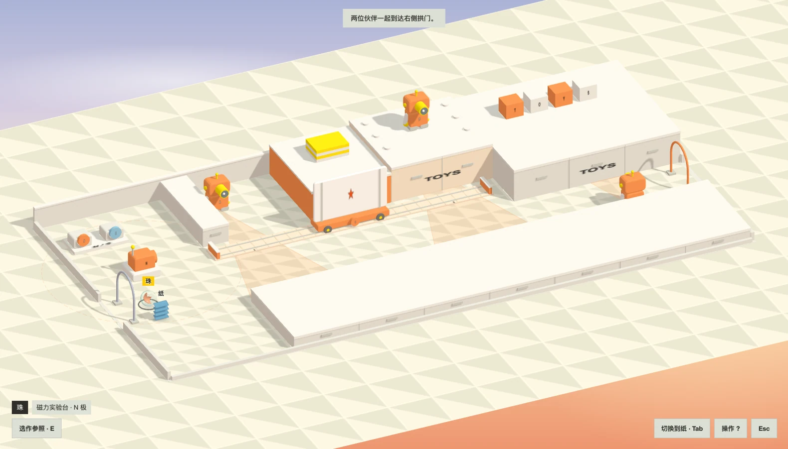
机器人 A：屏风只解决前半段
第一段先用磁力调整屏风的位置，形成可以移动的掩护。折纸需要借此换到合适的一侧，再从侧面接近机器人 A，近身缩短它的视野。
屏风并不是推到终点后就能忘掉的钥匙。它暂时改变了站位条件，而新的站位才让折纸拥有下一步操作。玩家需要看见两次变化之间的关系。

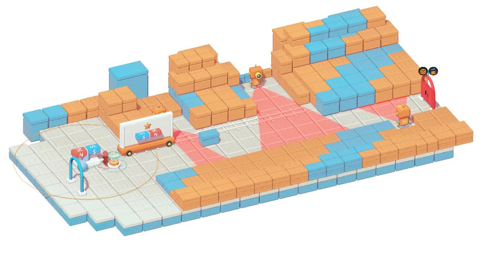

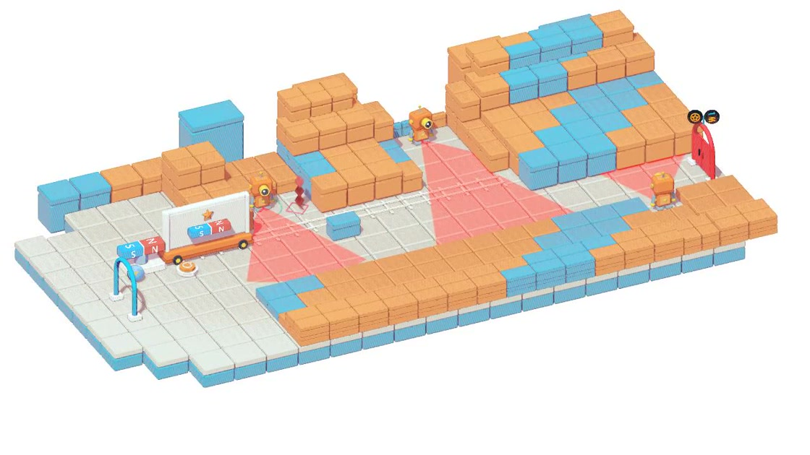
机器人 B、C：空间阻止玩家重复上一段
到了后面的机器人，靠墙位置与通路关系使前一段的近身方法不再直接适用。此时玩家需要重新思考，小球能不能把已经出现的观察朝向传给另一个机器人。
最终版后段先以 C 为参照改变 B，再以 A 为参照改变 C。这里真正发生变化的是玩家对“可借用属性”的理解：机器人既是阻挡道路的对象，也可以提供另一个机关需要的状态。

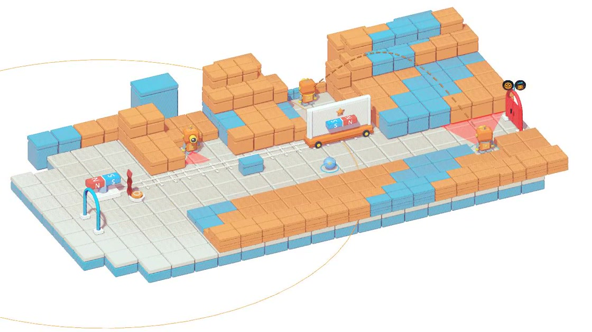
先处理 B 所在道路的观察条件。

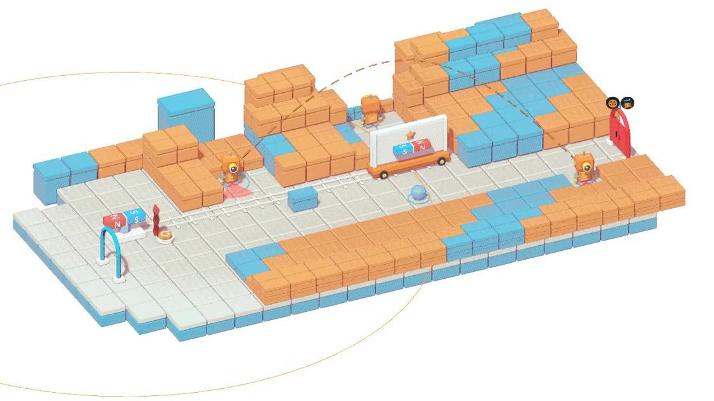
更换参照与接收者，再处理 C。一次连接的限制使操作需要分步安排。
迭代：堵住等待绕解，也要保留纠错空间
测试时，我明确要求机器人即使转头，也不能因此给正前方主路留出直接通过的缝隙。否则，玩家只要等一等就能跳过屏风、近身调整和同步的组合。
但限制不能把一次错误操作变成重开。另一个问题是屏风车被推得太远后，会脱离小球的可控范围。为此，我调整了可恢复的操作范围，让玩家仍然有办法把屏风移回来。

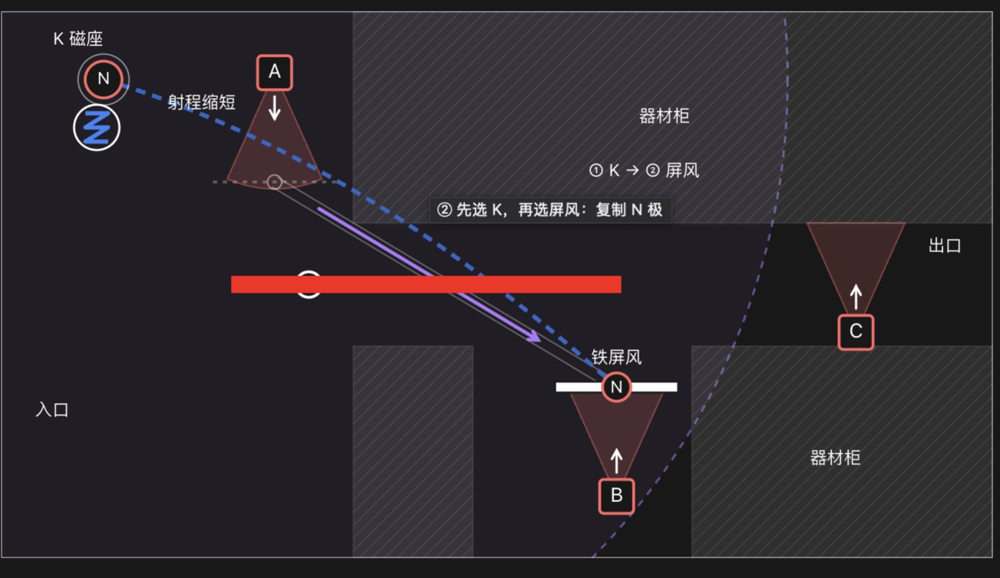
V3 原型的后段步骤与最终版本存在差异。本文用玩家版演示解释当前解法，原型用于观察空间与规则怎样形成。
双箱船闸：把距离变成状态存储问题
双箱船闸对我很重要。它把小球的作用范围量化为一条可被利用的规则，也让折纸必须近身操作这件事真正成为关卡限制。
玩家需要把两名角色送到高岸，但最初能够抬起水道的方式，要求折纸留在右岸维持水箱。小球可以先走，折纸却不能同时离开。这不是最后只能通过一个人的结局，而是解法中必须解决的分离。

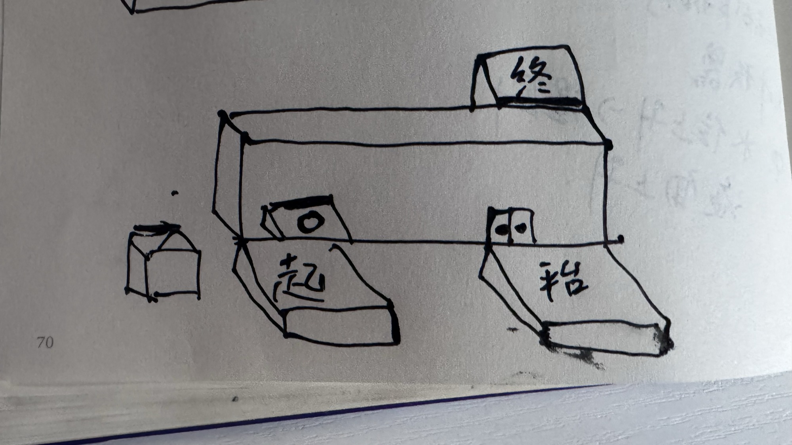

不同位置，拥有不同操作范围
| 站位 | 小球能够连接 | 折纸能够调整 |
|---|---|---|
| X：起点低岸 | 左箱 A 与水道 C | 身旁的左箱 A。 |
| Y：右侧低岸 | 右箱 B 与水道 C | 身旁的右箱 B。 |
| Z：高岸 | A、B、C 三处水体 | 不能隔空操作水箱，仍受近身限制。 |
A 的正常调节范围用于低岸航行；B 能产生更高水位，但有自动回位结构，需要折纸在旁维持。两只水箱因此承担不同作用：一个可以保存状态，一个能够在受限制的条件下产生高位。
关键在于，正常可调范围不等于从外部复制结果的上限。小球抵达高岸以后，能够把水道已有的高水位反向复制到 A，并在断开后保留下来。
先取得高位，再把它保存到能够离开的地方

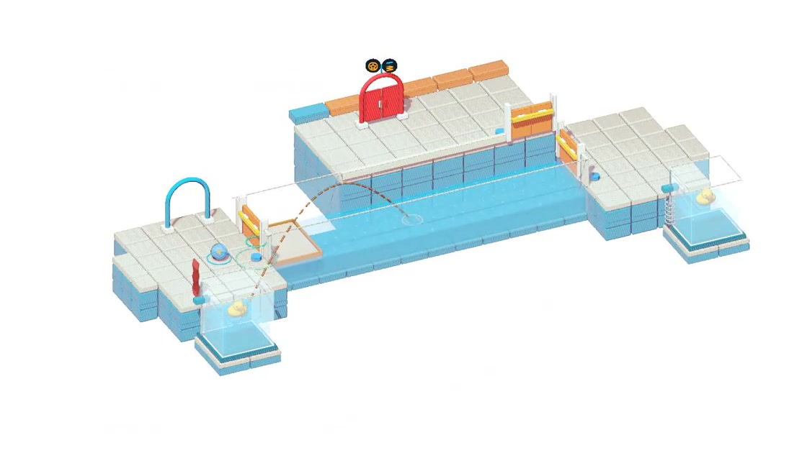
先让角色到达需要操作的两侧。此时小球还不能从任意位置同时连接所有水体。

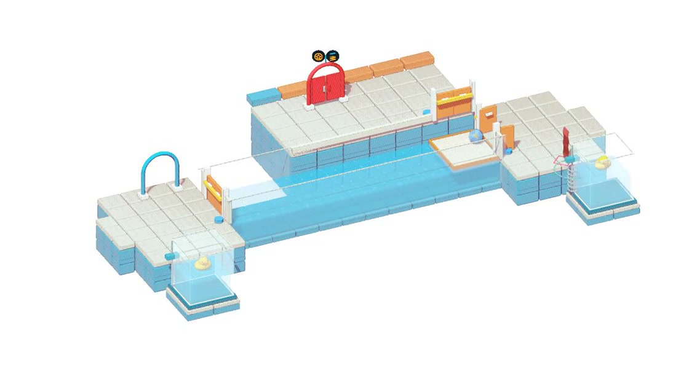
小球借升高的水道先去高岸。两名角色第一次升水时不能直接一起到达终点。

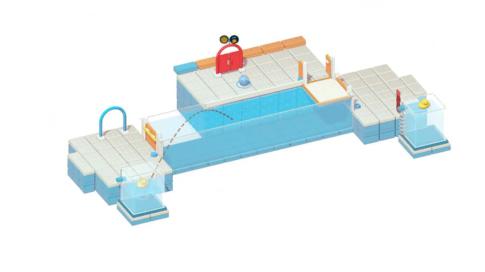
改变复制方向后，水道从接收者变成参照。左箱获得一个原本不能靠自身调节直接产生的状态。

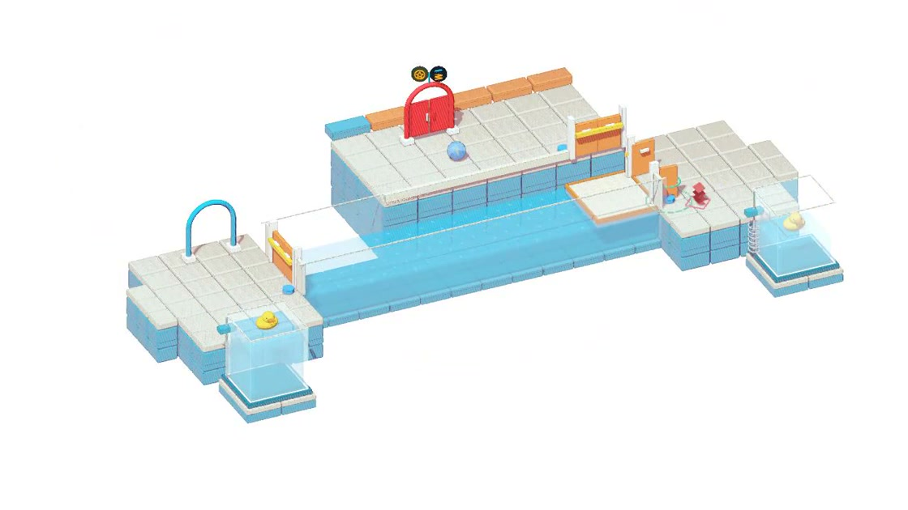
保存的高位与当前水道高度可以不同。玩家暂时降低水道，不会因此丢掉已经存入左箱的结果。

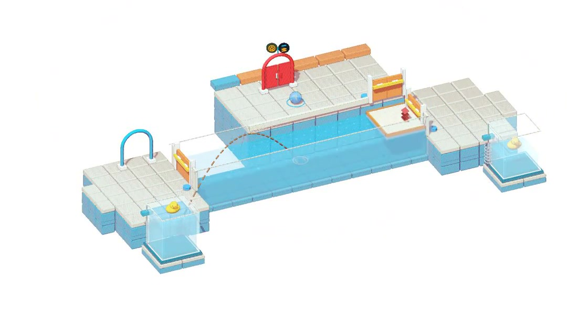
右箱不再需要折纸一直维持。原先被迫留在操作台的人，终于可以随着船到达高岸。
这一发现把几个已有规则叠在一起：连接有方向、断开保留状态、接收物能成为新参照、位置改变作用范围。关卡没有突然给予角色远程调整的新能力；它要求玩家把已经会的事情换一个方向使用。
为什么右侧平台不能直接删掉
我在讨论中反复强调，折纸不能远程控制很关键。如果把右侧操作平台删去，让它在船上就能完成所有调整，角色之间的分工与接回同伴的过程都会被压缩。
为避免提前一起登船，迭代中加入了右箱的回位结构；同时检查提前存水、高位返航等尝试。停靠条件与横向航行规则需要共同成立，才不会让关键问题被偶然绕开。对于仍然符合规则的等价解法，则不必为了维护一个唯一顺序而排除。
多米诺接力：让结果自己发生
多米诺关把能力放进容易观察的物理关系里：骨牌太矮，接力到不了；近处能够调整，远处却无法直接接触。前一段先让玩家理解尺寸的作用，后一段再要求用参照与同步把变化带过去。
转动部分则把几件不同的玩具串联起来。陀螺需要先得到初始运动，再由折纸调整尺度来加快；风扇借用它的转速，推动第一张骨牌，剩下的连锁由骨牌继续完成。

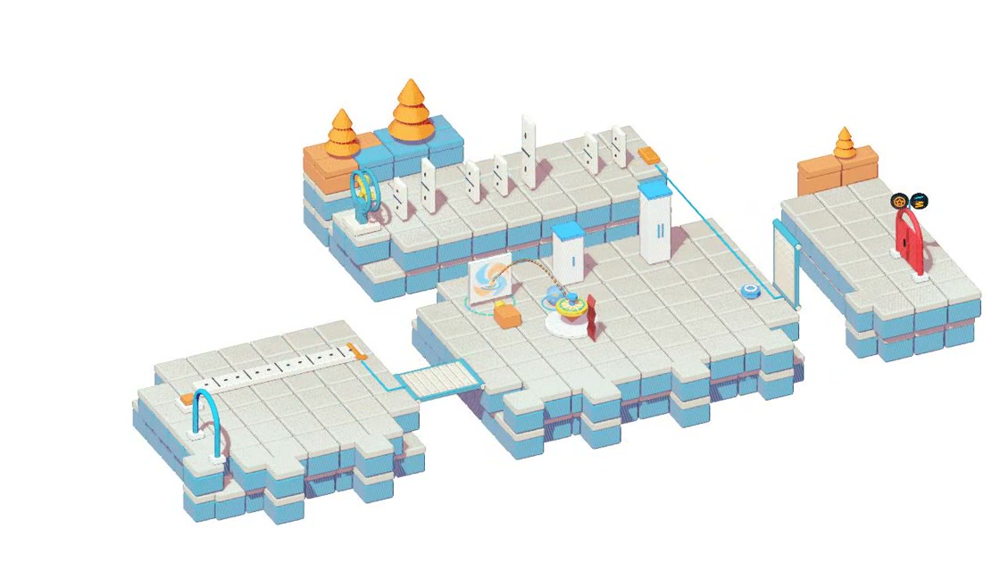

保留已经清楚的因果关系
我保留了风扇与陀螺持续连接的方案。风扇只需要推动第一张骨牌，后续便由骨牌自己完成；不必为了强制玩家断开连接，再加入额外的锁、计时或搬运机关。
这条取舍与全游戏的一次连接规则并不冲突。规则规定同一时间可以维持多少连接，但不要求每次解谜都必须把“断开”变成一个额外难点。这里值得观察的是从启动、放大到连锁的结果。
陀螺的最终操作改成拉伸加快转动。早期草案中关于压缩周期或衰减秒数的描述，没有作为最终规则写入本文。
镜宫：倒影成为一种新的参照
镜宫的核心问题很早就出现了：镜中的虚像究竟能不能参与交互？如果它可以被直接随意操控，发现会过于直白；如果不能，它又该怎样影响真实物件？
我最后把关系收束为：折纸改变真实的纸构件，小球可以选择镜中的形态作参照，再把这个状态传给另一件真实物体。镜子改变的是可用信息，角色使用的仍然是已经建立的调整与传递能力。
从“像一块屏幕”退回镜像本身

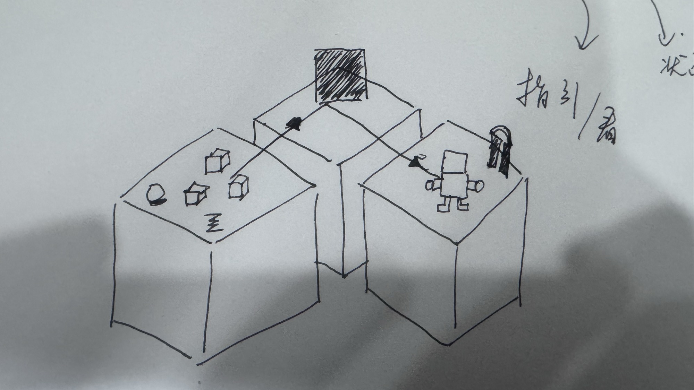

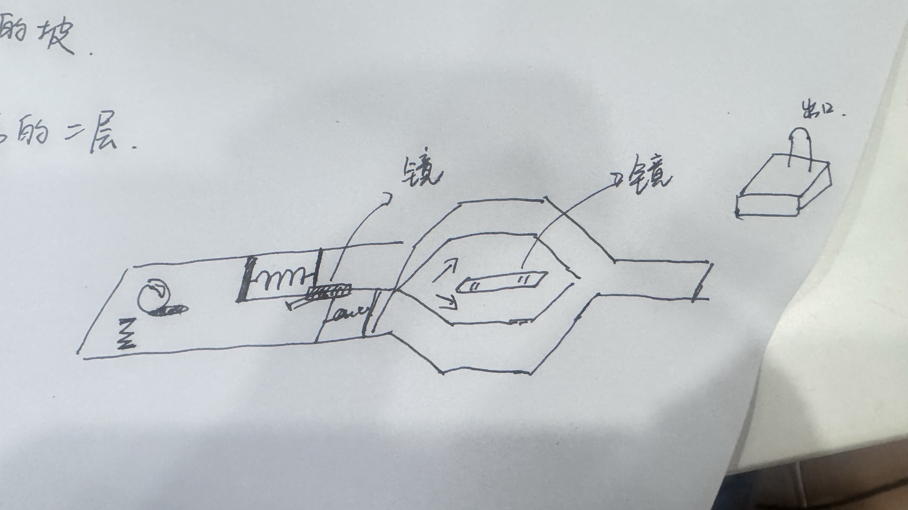
早期版本叠入了拼装、半透玻璃和多种属性，操作越来越多，目标却越来越难读。试玩时，我觉得镜子没有发挥镜子的作用，更像一块屏幕。
因此，我删去了需要反复调试的部分。玩家要意识到虚像能够参与交互，并且利用这个规则，已经足够困难；关卡的重点应该留给发现和运用镜像关系。最后的纸艺三段分别从方向、形态和高度重新使用这套能力。
第一段：真实物体的方向不合适，倒影却合适

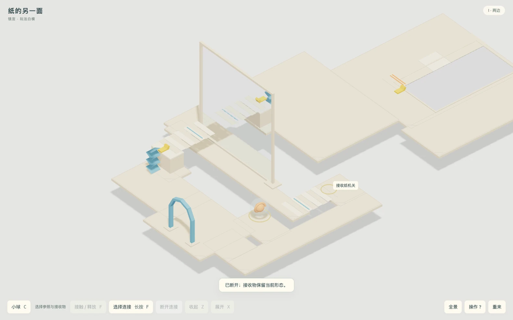

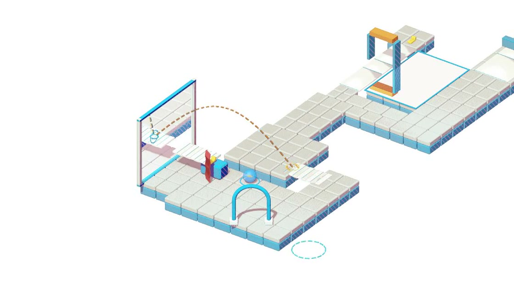
桥的真实伸展方向不能直接解决缺口问题，镜中的反向形态却提供了另一种状态。玩家需要把“镜子里看起来是这样”转成“这个状态也可以被选择和传递”。第一次成功复制，便建立了整关的关键发现。
第二段：向上与下凹有各自的用途

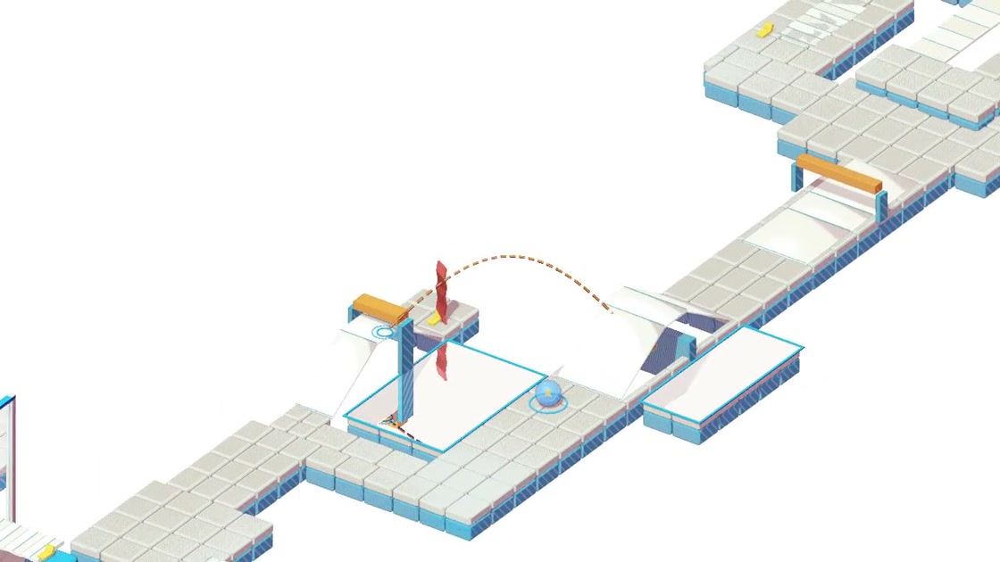
先把真实纸拱的状态留给接收件，再恢复原件，为同伴退出或移动创造条件。

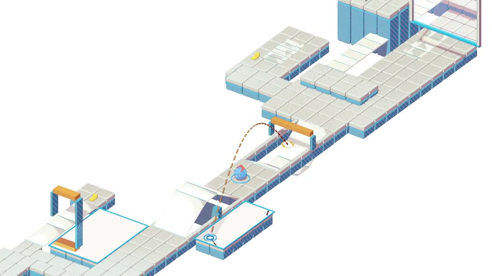
面对低梁时，向上的桥不再合适。玩家需要改用镜中的下凹状态，解决另一种空间限制。
这两次操作不能写成同一个“照镜子”动作。先前好用的真实形态，在下一个位置会成为障碍；玩家需要根据道路本身决定参照。镜像因此参与了解法，而不只是给同一个机关换一种外观。
第三段：保存高阶，再回来接同伴

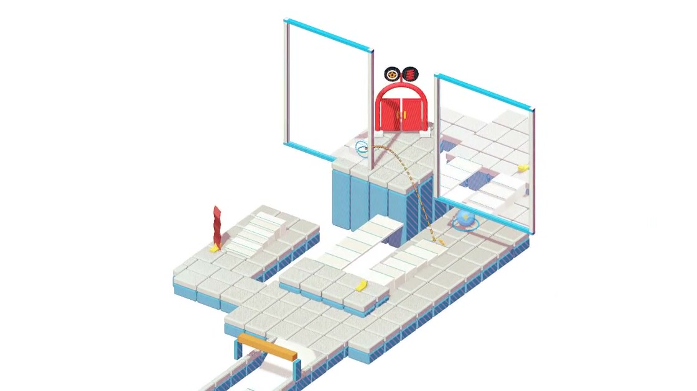
第三段把镜像能力和断开保留状态重新组合：先用低阶接近或停靠，再保存高阶，恢复较低的原件以接回同伴。一个角色已经获得高处道路时，还需要考虑另一个角色如何离开原来的位置。
这也是船闸问题在另一种材料中的延伸。物件不再是水箱与船，但保存结果、恢复原件、重新会合的逻辑仍然成立。玩家此前形成的理解可以在新的空间里被再次使用。
镜面位置就是线索的一部分
镜面必须让玩家看见并识别真实与倒影之间的关系。如果关键形态被遮住，或者倒影只像一块模糊图案，玩家就没有理由选择它作为参照。调整镜面的朝向、纸桥的高度与道路遮挡，都是谜题可读性的工作。
本文展示的是已完成的纸艺三段。制作中讨论过的镜后世界与告别演出没有进入这部分可玩关卡，也没有被写成已经完成的成果。
第一道折痕与独白：同一组动作的首尾变化
开场让小球为流水线上的六个机器人逐一复制转动。机器人到达操作位置后会停下来，等待玩家完成复制。第一次使用能力不需要赶时间，玩家可以先看清参照、接收和结果之间的关系。
传送带出现故障时，折纸出现并提供帮助。玩家先看见它对环境的影响，再在后面的初次同行里真正掌握它的操作。两名角色的关系因此先通过一件共同完成的事情建立起来。
回到同一条流水线
最后一关回到第一道折痕的场景，小球再次为六个机器人复制转动。这一次折纸没有出现。开场与结尾保留同一组动作，让陪伴的变化通过已经熟悉的操作显现。
这一段不需要再教一个新机制。经历了中间的配合以后，玩家重新完成早先的工作，能够从相似的画面和动作中辨认出不同。它也给这一套围绕共同操作展开的关卡提供了一个结束。

从原型到发布：统一玩家已经学会的事情
关卡在不同时间制作，各自的临时方案很容易长成不同的操作方式。整合时，我需要重新检查：同一个物件在不同关卡里如何选取，参照与接收顺序是否一致，离开范围会发生什么，以及玩家怎样知道自己已经完成了当前阶段。
直接操作物体，而不是物体旁边的按钮
早期部分关卡在物体旁边放置临时小节点，供小球点击连接。后续我统一为直接连接物体本身，让选择对象与画面反馈对应起来。
这是对整体交互的整合工作，不等于把队友设计的关卡计入我的原创关卡。统一规则的目的，是让玩家在这一关学到的动作，到了下一关仍然能够使用。
先让关键条件可见

机器人视野、磁极标记、岸台停靠位置、水箱回位和镜面朝向，都需要让玩家看清。规则可以要求推理，但如果连操作对象或状态变化都无法辨认，玩家只会怀疑自己有没有按对。
终点也需要清楚地区分“一个人已经到达”和“两个人都已通过”。共同出口等待两名角色，分开的出口保留各自的对应关系，让玩家知道还需要完成哪一步。
从文字提示到动作演示
玩家版提供文字与视频提示。文字先给方向，演示再把角色切换和状态变化放到时间里。本文使用的短视频就来自这套内置演示；它们说明关卡如何操作，不代表外部试玩者的实际表现。
网页原型仍然保留，因为它们能显示规则在不同空间和界面里怎样被尝试。但原型和发布版需要各自有清楚的名字，尤其是磁力关的复制顺序、乐器关的节奏层次和镜宫的最终结构，不能在展示时混成一个版本。
| 制作阶段 | 解决的问题 | 保留的材料 |
|---|---|---|
| 能力探索 | 两名角色各自能做什么，合作时能扩展什么 | 风琴书桌、连接实验、手写笔记。 |
| 独立关卡原型 | 规则能否在具体空间中形成可解的问题 | 网页原型、草图、修改截图。 |
| Godot 整合 | 交互、范围、出口与状态反馈是否一致 | 玩家版工程、交接资料与检查记录。 |
| 发布与回看 | 如何帮助卡关，以及哪些规则仍需观察 | 文字／视频提示、发布版本。 |
我希望继续检验的部分
这些关卡目前的验证主要来自制作中的试玩、协作讨论和工程检查。还需要更多首次接触的玩家，帮助判断他们是否能看出可复制的属性，是否理解断开后保留的状态，以及什么时候需要同伴回来。
我希望保留的方向已经比较明确：小球与折纸的能力足够简单，但在不同物件、距离和空间条件下，可以长出不同的合作方式。关卡的变化来自这些关系，而不是不断增加新的角色技能。
游戏与过程原型
发布版包含最终关卡与提示。以下原型保留各自的制作阶段，可以对照观察空间、规则和表达的变化。
文案根据我的创作说明与制作讨论整理。手绘、过程截图、历史原型和玩家版演示分别标注；新增规则示意用于辅助阅读。